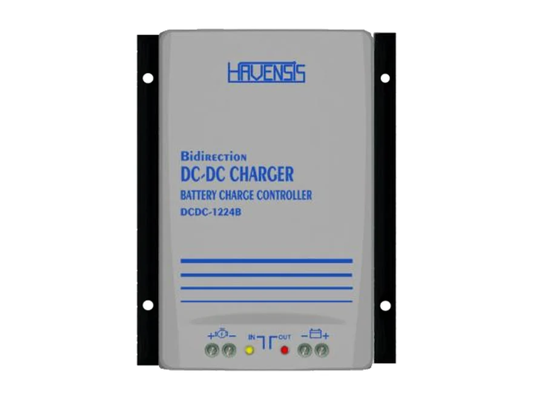
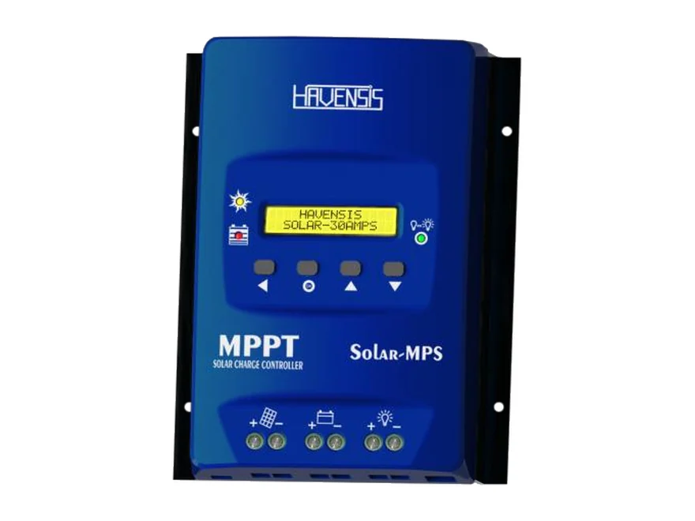
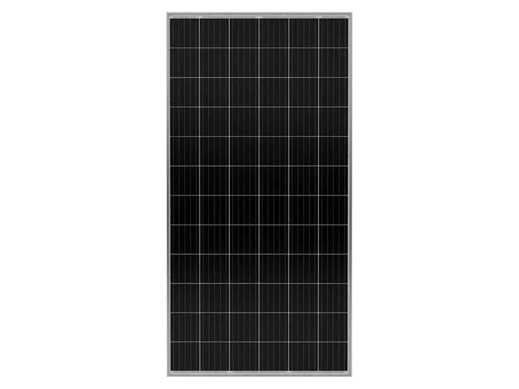
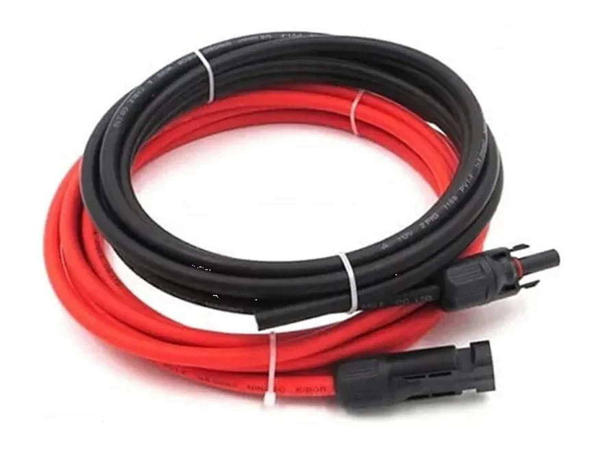
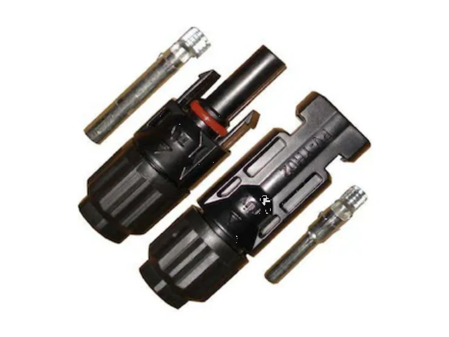

Karavan ve motokaravan
Yolda alternatörden yaşam aküsünü doldurur; kampa vardığınızda buzdolabı, aydınlatma ve su pompası için akü hazırdır.

Çift yönlü DC-DC akü şarj cihazı: yolda alternatörden yaşam aküsünü 40 A ile doldurur; takviye modunda yaşam aküsünden marş aküsüne 10 A'e kadar şarj yaparak zayıflayan marş aküsünü destekler.
₺13.600 ≈ $276
KDV dahil fiyattır.
💰 Havale/EFT ile: ₺13.200
Havensis DCDC-1224B, karavanlar için özel tasarlanmış çift yönlü DC-DC akü şarj cihazıdır. Yaşam aküsünü 40 A ile şarj eder, takviye modunda ters yönde 10 A verir; 10–35 V girişi kabul eder, 12–32 V çıkış verir ve %96,4 dönüştürücü verimine sahiptir.
Araç çalışırken alternatör marş aküsünü doldurur; karavanın buzdolabı, aydınlatma ve su pompası ise ikinci bir aküden, yaşam aküsünden beslenir. İki aküyü doğrudan birbirine bağlamak park hâlinde marş aküsünü de boşaltır; basit bir röle ise yaşam aküsünü çoğu zaman tam dolduramaz, uzun kablolarda da gerilim kaybı yaşanır.
DC-DC akü şarj cihazı iki akünün arasına girer: alternatörden gelen enerjiyi alır ve yaşam aküsüne kontrollü biçimde aktarır. 12-12, 12-24, 24-12 ve 24-24 V şarj yapabildiği için aracınız 12 V ya da 24 V olsun, yaşam aküsünü 12 V ya da 24 V kurabilirsiniz.
Motor kapalı tanıma özelliği aracın durduğunu algılar ve ters akımı engeller; park hâlinde marş aküsü yaşam aküsü için boşaltılmaz. Tüm parametreler ekrandan programlanır; dijital ekran 5 m uzatma kablosuyla bağlandığı için cihaz akülerin yanında dururken ekranı karavanın içine alabilirsiniz.
Takviye modu, uzun süre park eden araçlarda zayıflayan marş aküsünü destekler: cihaz ters yönde çalışır ve yaşam aküsünden marş aküsüne 10 A'e kadar şarj yapar. Yaşam aküsü güneş paneliyle doluyorsa marş aküsü de böylece dolu kalır.
Cihaz, Havensis tarafından Türkiye'de üretilir. Türkiye'nin her yerine kargo ile gönderiyoruz; Antalya bölgesinde isteğe bağlı yerinde kurulum yapıyoruz.
| Marka | Havensis |
| Model | DCDC-1224B |
| Tip | Çift yönlü (takviye modu) |
| Akü gerilimi | 12/24 V |
| Şarj kombinasyonları | 12-12, 12-24, 24-12, 24-24 V |
| Şarj akımı | 40 A |
| Takviye şarj akımı | 10 A |
| Giriş gerilimi | 10–35 V |
| Çıkış gerilimi | 12–32 V |
| Dönüştürücü verimi | %96,4 |
| Şarj kaynağı | Alternatör (marş aküsü üzerinden) |
| Ayarlar | Tüm parametreler ekran ile programlanabilir |
| Ekran | Dijital ekran bağlantısı, 5 m uzatma kablosu |
| Koruma | Ters akım koruması (motor kapalı tanıma) |
| Tasarım | Karavanlar için özel tasarım |
| Cihaz boyutu | 162 × 210 × 70 mm |
| Üretim | Yerli üretim (Türkiye) |
Değerler üreticinin (Havensis) ürün listesinden alınmıştır. Listede olmayan bir değeri merak ediyorsanız bize yazın; üreticiden teyit edelim.
DC-DC akü şarj cihazı nedir? GES Sözlüğü →
Motorlu bir araçta ikinci aküyü yolda, alternatörden doldurmak gereken her yerde.
Yolda alternatörden yaşam aküsünü doldurur; kampa vardığınızda buzdolabı, aydınlatma ve su pompası için akü hazırdır.
Motor çalışırken servis aküsünü şarj eder; marş aküsü motoru çalıştırmaya hazır kalır.
Ambulans, seyyar satış, kamp ve atölye araçlarında ikinci aküyü motor çalışırken doldurur.
Uzun beklemede zayıflayan marş aküsünü, takviye modunda yaşam aküsünden 10 A'e kadar şarj ederek destekler.
Cihaz marş aküsü ile yaşam aküsünün arasına bağlanır; dijital ekran 5 m kabloyla karavanın içine alınabilir.
📟 Dijital ekran 5 m uzatma kablosuyla cihaza bağlanır; şarj karavanın içinden izlenir ve programlanır.
🔁 Takviye modunda akış ters döner: yaşam aküsünden marş aküsüne, 10 A'e kadar.
Cihazın girişini marş aküsüne bağlayın; akünün yakınına uygun bir sigorta koyun.
Çıkışı yaşam aküsüne bağlayın; bu hatta da akünün yakınına sigorta koyun.
Dijital ekranı 5 m kabloyla görebileceğiniz yere alın; şarj değerlerini yaşam akünüze göre programlayın.
Şarj motor çalışırken yapılır; motor durunca cihaz bunu algılar ve marş aküsünü korur.
Seçimi yaşam akünüzün kapasitesi ve marş aküsünü takviye etme ihtiyacınız belirler.
| Model | Tip | Şarj akımı | Takviye | Giriş | Çıkış | Verim | Boyut |
|---|---|---|---|---|---|---|---|
| DCDC-1224-30 | Tek yönlü | 30 A | — | 10–35 V | 12–32 V | %96,4 | 158 × 210 × 60 mm |
| DCDC-1224-40 | Tek yönlü | 40 A | — | 10–35 V | 12–32 V | %96,4 | 162 × 210 × 70 mm |
| DCDC-1224B-40 Bu ürün | Çift yönlü | 40 A | 10 A | 10–35 V | 12–32 V | %96,4 | 162 × 210 × 70 mm |
Aynı siparişte alın; hepsi aynı kargoyla gelsin.

Karavan tavanına panel eklerseniz yaşam aküsü park hâlinde de güneşle dolar.
₺6.400Ürünü İncele →
780 × 1536 mm, 8,5 kg: tavana taşınması kolay kompakt TOPCon panel.
₺7.500Sepete ekle →
Panel ile cihaz arası: 5 m siyah + 5 m kırmızı.
₺1.000Sepete ekle →
Panel kablosunu solar kabloya bağlar.
₺100Sepete ekle →Doğrudan bağlantı park hâlinde marş aküsünü de boşaltır; basit röleler ise yaşam aküsünü çoğu zaman tam dolduramaz ve uzun kablolarda gerilim kaybı yaşanır. DC-DC şarj cihazı iki aküyü ayırır ve yaşam aküsünü kontrollü biçimde doldurur.
12 V ve 24 V sistemli araçlarda. Cihaz 12-12, 12-24, 24-12 ve 24-24 V şarj yapabilir: örneğin 24 V bir kamyonda 12 V yaşam aküsünü şarj edebilir.
Hayır. Motor kapalı tanıma özelliği aracın durduğunu algılar ve ters akımı engeller. Takviye modunda ise cihaz bilinçli olarak ters yönde çalışır ve marş aküsünü yaşam aküsünden besler.
Kabaca akü kapasitesi ÷ şarj akımı: 100 Ah'lik boş bir akü 40 A ile yaklaşık 2,5–3 saatlik sürüşte büyük ölçüde dolar. Son kısım akü tipine göre daha yavaş dolar.
Tüm parametreler ekrandan programlandığı için şarj değerleri yaşam akünüze göre girilir. Akünüzün tipini ve şarj değerlerini bize yazın; sipariş öncesi uygunluğunu birlikte kontrol edelim.
Dijital ekran cihaza 5 m uzatma kablosuyla bağlanır. Cihaz akülerin yanında dururken ekranı karavanın içinde, görebileceğiniz bir yere alırsınız; şarjı buradan izler ve programlarsınız.
Uzun süre park eden araçta marş aküsü zayıflayabilir. Takviye modunda cihaz ters yönde çalışır ve yaşam aküsünden marş aküsüne 10 A'e kadar şarj yapar; yaşam aküsü güneş paneliyle doluyorsa marş aküsü de desteklenmiş olur.
Yalnız yaşam aküsünü yolda doldurmak istiyorsanız tek yönlü DCDC-1224 yeterlidir. Aracınız uzun süre park ediyorsa ya da güneşle dolan yaşam aküsünün marş aküsünü de desteklemesini istiyorsanız çift yönlü DCDC-1224B'yi seçin.
Havensis'in Bluetooth ve Wi-Fi izleme modülleri bu cihaza takılabilir; cihazdaki tüm değerleri telefonunuzdan izlersiniz. Modül ürüne dahil değildir; fiyat için bize yazın.
Türkiye'nin her yerine kargo ile gönderiyoruz; kurulumu bir oto elektrikçisi yapabilir. Antalya bölgesinde isteğe bağlı yerinde kurulum yapıyoruz.
12/24 V araç aküsünden yüksek gerilimli akü grubunu şarj etmek için BOOST DC-DC şarj cihazımıza bakın.
Stok ve teslimat için WhatsApp'tan yazın; aynı gün dönüş yapıyoruz.